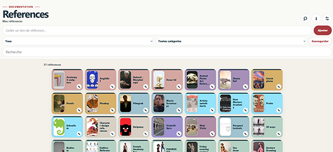
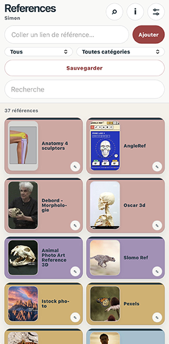
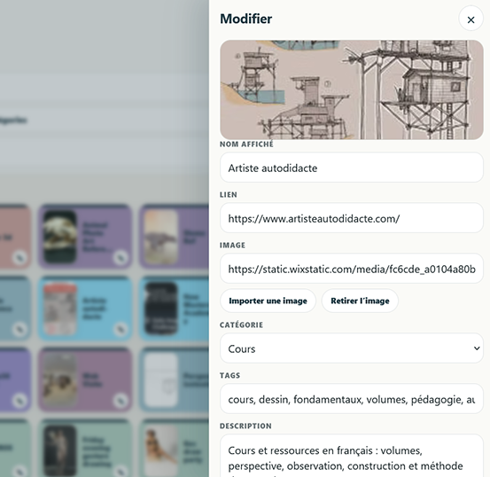

Eigrutel Lab — Documentation
References
Constituer, classer et sauvegarder des tableaux de références visuelles à partir de liens web ou d’images importées.
OrganiserCatégories, couleurs, mots-clés, favoris, filtres et tri.
ConserverSauvegarde locale et export JSON portable pour chaque tableau.
AdapterTableaux nommés, catégories personnalisables et catalogue initial séparé.
Captures d’écran


